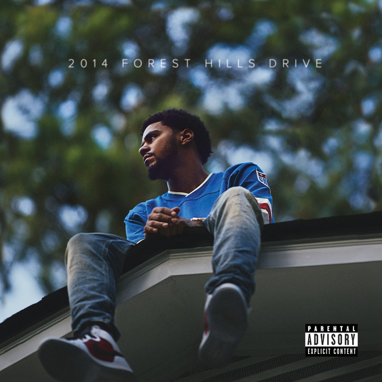
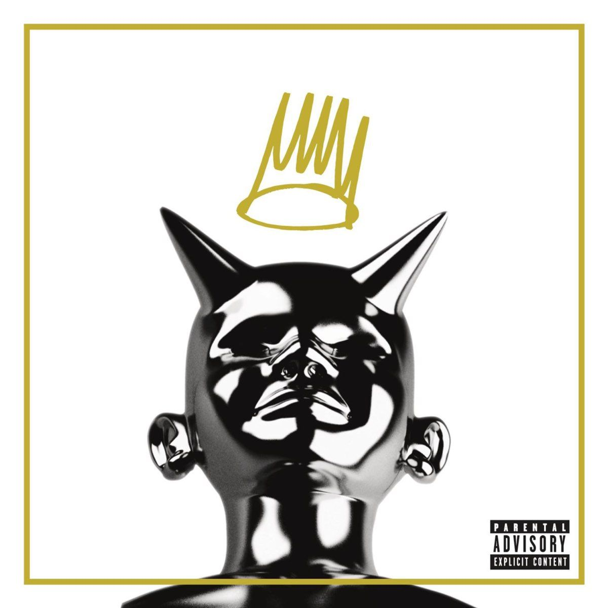
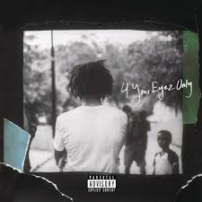
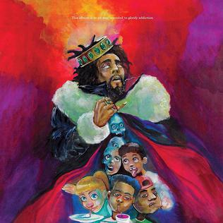
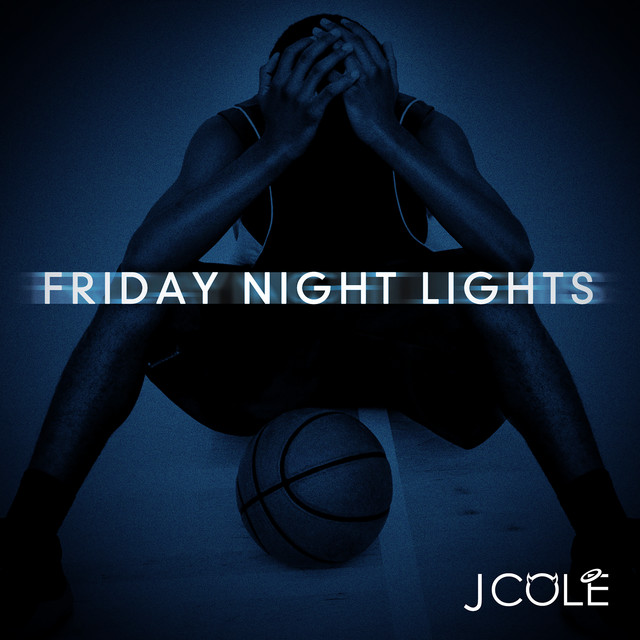

The Cole Archive
INTERACTIVE SPINNING VINYLS & LYRICAL BREAKDOWNS
The Discography

2014 Forest Hills Drive
Tap to Decode Lyrics

Born Sinner
Tap to Decode Lyrics

4 Your Eyez Only
Tap to Decode Lyrics
The Off-Season
Tap to Decode Lyrics

KOD
Tap to Decode Lyrics

Friday Night Lights
Tap to Decode Lyrics
Request An Unlisted Track Breakdown
Missing your favorite bar? Submit the song title below and our DOM system will queue it dynamically.